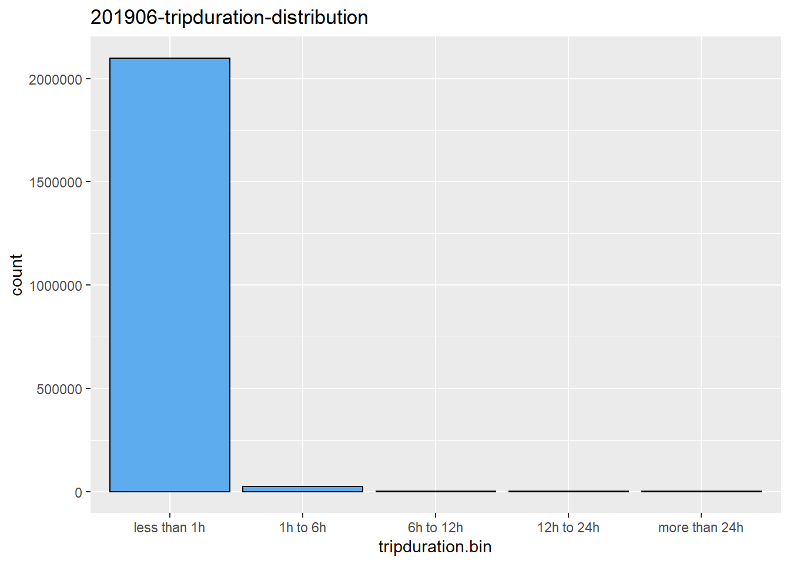

Chapter 6 The Membership analysis (Age, Gender, Annual memberships or Subscriber)
1.Color Palette
First, we carefully pick our color palette for plots in this project, to make it consistent with company brand. The base colors for Citibike is blue and red.
Color patette chosen are steelblue series and indianred series.
2.Age/gender vs bike usage
We care about how gender and age affect the bike usage, what’s the difference betwwen each group and what kind of patterns there. Also, we want to see if there are any changes among years. Two facet line charts were created based on total number of trips and average duration of trips.
Three features were considered, age, gender and year


Note: For 2020, data was collected from January to October
We can clearly see some patterns from above two plots.
1) Males made more trips than females amnong almost all age levels. Without checking the accurate number, it looks like males have more than twice of the total trips made by females
2) Total trips increases before age 30, but decreases after that, both males and females have total trip peaks around age 30. Young people tend to use bikes more.
3) In terms of average duration,females tend to have longer trip duration then males. It makes sense as in general, makes ride faster then females.
4) An interesting thing is that below age 65, the average duration is very stable for both male and female, between 10 and 20 minutes, but after age 65, it varies much. We can think about people may use bike a lot for daily commuting purpose on Mahattan. But after retirement, people bike for different reasons, maybe for exercise or for short trips.
5) Another thing is that the average duration in 2020 seems longer then previous years. Probably people who need to go outside reduce the use of public transportation, and ride bikes more to get to destination
6) Finally, we think in general there is slight but not that significant pattern changes in year 2020 based on age and gender.
3.Membership types vs bike usage We want to look into more details to check if user behavior differs among age, gender and year. There are two Membership types, pass user and subscriber. We want to see which one peple use more. Two plots made here, one is stacked bar chart to show the total numbers, another one is mosaic plot to understand the association among variables, mainly gender and age in diferent years.
Ages were binned into categories for analysis.

Note:
1) Customer = 24-hour pass or 3-day pass user; Subscriber = Annual Member
2) For 2020, data was collected from January to October
We have some findings below.
1) We found in both bar chart, for different age bins, age 45-54 tend to have the highest percentage of customer type, followed by age below 35 which have relatively higher percentage of customer type. While age 35-44 users and age higher then 55 users tend to have more subscribers.
2) We have some doubts for age 45-54, and curious why this age bin have the highest customer type. This question may be answered by mosaic plot.
3) Another thing we can tell from the plots is that due to covid-19, the percentage of customer increased, people work from home and stay at home may cancel the annual membership. But in general, the usage doesn’t drop largely.
 An interesting thing is that for gender ‘unknown’, age 45-54 occupies the lagest portion and membership type ‘customer’ is the main type in this bin, which is very different from other catergories. We cannot find a good reason for this abnomality, and guess when people create new profile, they don’t want to input the true information and keep the default settings, especially for membership type ‘customer’, who care more about to use bike as soon as possible.
An interesting thing is that for gender ‘unknown’, age 45-54 occupies the lagest portion and membership type ‘customer’ is the main type in this bin, which is very different from other catergories. We cannot find a good reason for this abnomality, and guess when people create new profile, they don’t want to input the true information and keep the default settings, especially for membership type ‘customer’, who care more about to use bike as soon as possible.
For this strange pattern in unknown category, we will focus more on male and female categories, and filter the data for gender unknown for further analysis.

 Note:
1) The plot should show the fill in color for the last cut - usertype, but it’s not working here.
Note:
1) The plot should show the fill in color for the last cut - usertype, but it’s not working here.
2) In order to show more clear plot, we made the first cut horizontally
Mosaic plot mainly show the proportion and association for gender, age and usertypes. The patterns are now more clear then stacked bar chart.
1) For both male and female, yonger ages tend to have more customer type, while elder people tend to have more subscribers. We guess elder people may have more fixed pace of life and commute between home and workplace daily; and for age higher than 55, those people may bicycle for exercise and healthier life style.
2) We don’t see much difference for usertypes in terms of age and gender.
- Same thing we can tell from mosaic plot, due to covid-19, the percentage of customer increased